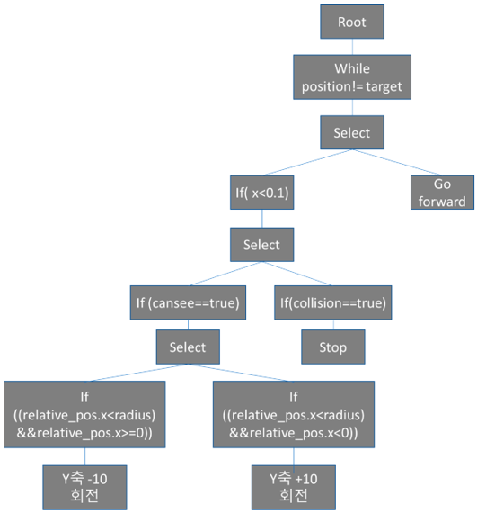
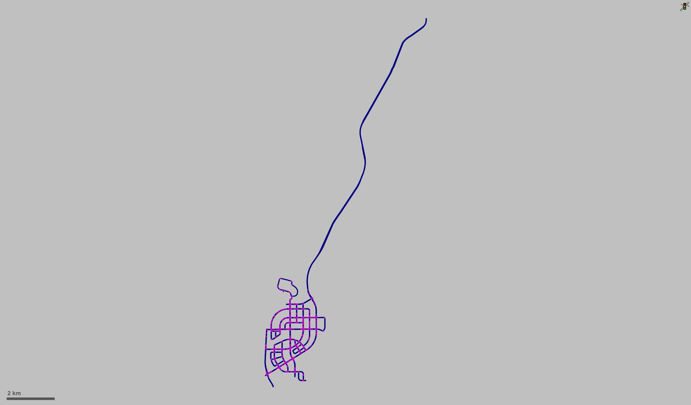
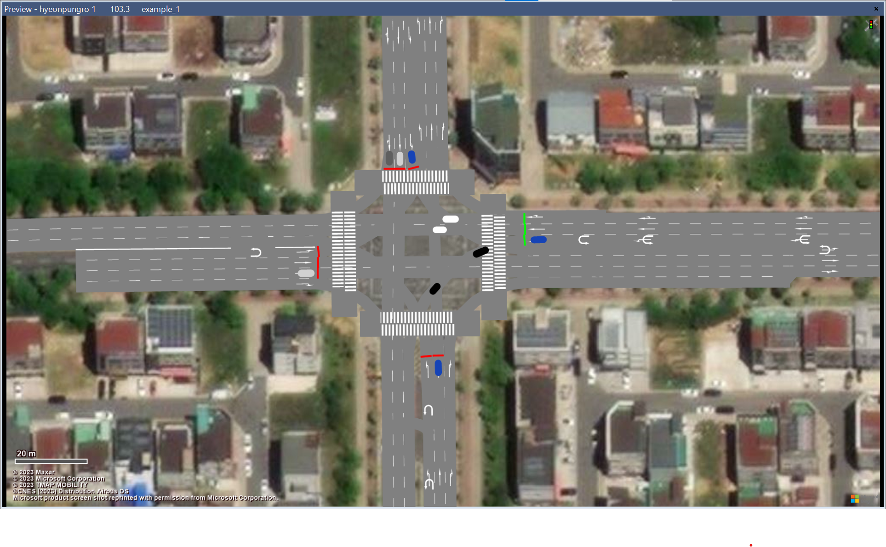
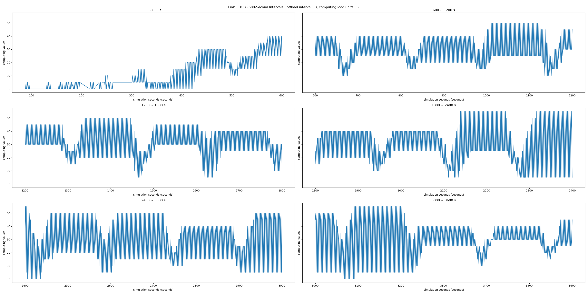
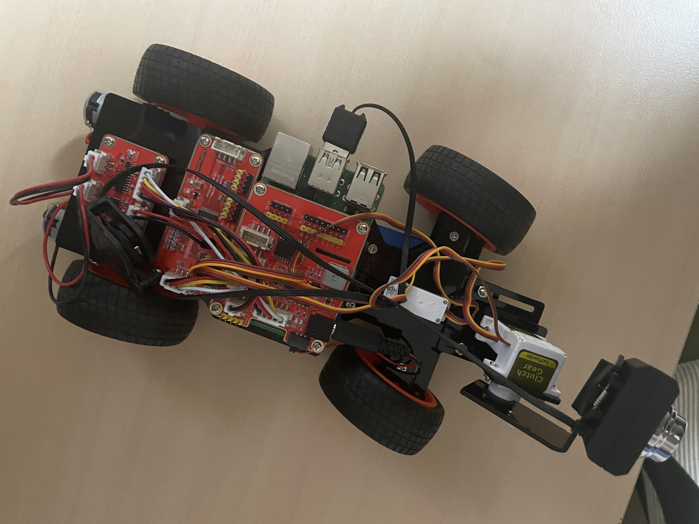
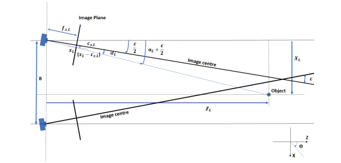
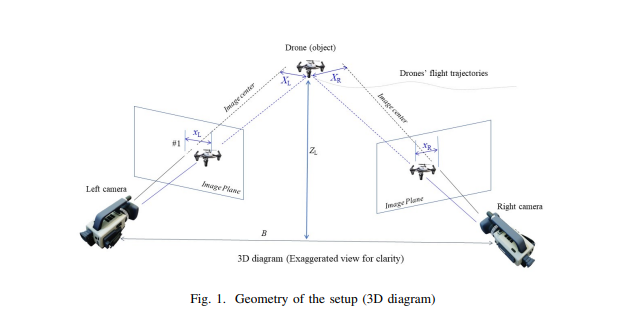
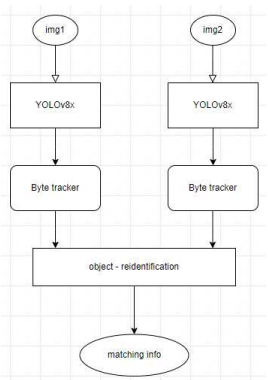
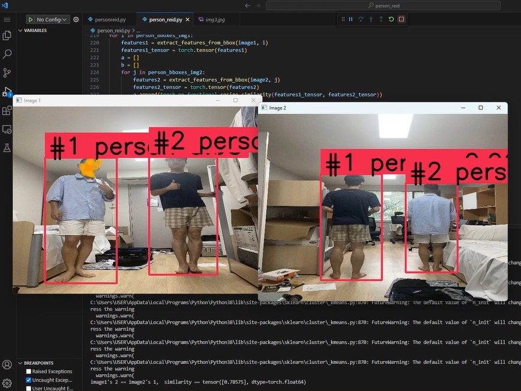

All of the projects in this page are carried out by HASS undergraduate members.
Students' studies, such as analyzing papers, are not introduced. Only the contents of the project are posted.
A short explanation and demo video are introduced for each project.
Some students have produced detailed instructions for their projects. You can freely use the instructions when you enter the lab!
There are so many different and wonderful projects. Scroll down and take a look!
Our projects
1. Unity Projects
We've been watching lectures in Unity official page for about a month and completed several Unity projects.
We learned about the game engine and understood the basic simulation methodology, and now We can run the simulation at our disposal.
Unity has many AI-based technologies like Reinforcement learning, so you can do many fun projects.
Fall Guys, which was once very famous game, was also made by using Unity. Want to develops games or simulations that don't require high performance computer and have cute characters?
Study Unity Right Now!
1 : Car driving at Virtual Environment
2 : Creating my own Virtual Environment
3 : Creating a balance game
4 : Reinforcement learning based autonomous car
5 : Drone Simulation
6 : Drone simulation Environment
7 : Pedestrian behavior tree

8 : pedestrain behavior simulation
2. Unreal Engine Projects
We've been watching lectures in Udemy for about a month and completed six Unreal Engine projects.
We learned about the game engine and understood the basic simulation methodology, and now We can run the simulation at my disposal.
Unreal Engine has many AI-based technologies, so you can do many fun projects.
The newly released Kart Rider Drift game is also made with an Unreal engine. Want to run high graphics games or simulations? Study Unreal Engine Now!
1 : Creating my own Virtual Environment
2 : Creating a shooting game
3 : Creating a fall guys
4 : Creating a finding secret ways game
5 : Creating a tank game
6 : Creating an RPG game
3. Vissim Projects
Vissim is a tool optimized for automobile-related simulation among various simulation tools.
Vissim can design custom road environments more comfortably than other tools and summon cars to custom roads at will.
In addition, there are many functions related to the simulation of the vehicle, such as analyzing the flow of the vehicle and outputting it as Excel data.
Using a Vissim, we built a Technopolis road and ran a vehicle flow simulation on it.
This project can contribute to many things, such as simulation of autonomous vehicles targeting Technopolis in the future.
1 : Technopolis HIGH ROAD VIEW

2 : HIGH ROAD VIEW - close

3 : Simulation with Pedestrian
4 : Simulation with parking
5 : 2D Simulation
6 : 3D Simulation
7 : simulation video
8 : result graph

4. Creating an RC CAR that follows certain object we wants.
We carried out the project using RC cars made by combining microcontrollers, motors, and various sensors.
In this project, the RC car detects people on the screen, selects one person that the user wants, and follows only that person.
About 30 pages of this project report that We wrote ourself are kept in the lab material. This project use not only object detecting but object tracking using byte tracker.
1 : Object tracking with Laptop Camera
2 : RC CAR Picture

3 : Object detecting with USB Camera
4 : RC CAR following me
5. Creating a Drone that follows and attacks certain object we want.
When We worked on the project with the RC car, We could only follow the object at a slow speed due to the hardware's response speed limit.
However, by using the Telo Edu drone with strong hardware, it is possible to follow the desired object well at high speed.
In this process, control algorithms such as PID control were used, and the concept of signal was also used to freely change modes such as keyboard mode, tracking mode, and attacking mode.
Even when there is more than one person on the screen, only the set target follows well.
1 : LABTOP'S VIEW
2 : PERSON'S VIEW
6. Get 3D coordinates of an object when two different camera detect the object.
Using cameras to find 3D coordinates of an object in the real world is very important.
If the 3D coordinate of the object is obtained, the movement path of the object may be tracked, which may be applied to various studies.
For example, to distinguish between birds and drones, classification is performed using machine learning based on the flight path of birds and drones.
In this case, how can we obtain the flight path of birds?
Surprisingly, only two cameras can tell the bird's 3D flight path. This project is to extract a person's movement path with two cameras.
The methodology was referenced in the IEEE paper. Code and hardware implementation was done by us.
Also, We made this research possible even when the camera moves. The paper only suggests the situation that camera cannot moves though.
IEEE paper name : Near - parallel binocular-like camera pair for multi-drone detection and 3D localization.
1 : methodology in IEEE paper

2 : methodology in IEEE paper

3 : LABTOP'S VIEW
4 : PERSON'S VIEW
5 : Camera moves - 1
6 : Camera moves - 2
7. Conducting several experiments using ZED 2i stereo camera
When using various computer vision technologies, a single camera often comes with many limitations.
That's why researchers frequently utilize two cameras to overcome these limitations.
The hardware that consolidates the essence of these research efforts is the ZED 2i stereo camera.
We conducted experiments using this camera to explore its capabilities.
Especially, the first one is getting position of camera itself based on its real time video. (Not based on GPS).
Every experiment is conducted by using Python.
The "Object Reidentification Problem" refers to the task of identifying and tracking objects across different views or frames in a video or image sequence.
In computer vision and image processing, this problem is a crucial component of tasks like surveillance, tracking, and scene understanding.
Imagine you have a video stream from multiple cameras capturing the same scene from different angles. The goal is to correctly associate and match the same object that appears in different camera views.
This is challenging because objects can change appearance due to variations in lighting, viewpoint, occlusion, and other factors.
We Implemeted this algorithm by using Python.
1 : algorithm Flowchart

2 : results

9. Creating HASS LAB Introduction web page and Creating washing machine app similar to HypenPay
It is very important to introduce your abilities to others in modern society.
It's a great way to meet and make a speech, but sometimes it can be a difficult environment to meet.
Introducing yourself over the web may be one of the best ways.
We created an undergraduate page web to easily introduce students' projects to others.
In addition, if you have an idea, you can also develop any kind of app/web.
If you do an app/web development that helps the lab, the professor may give you an incentive :)